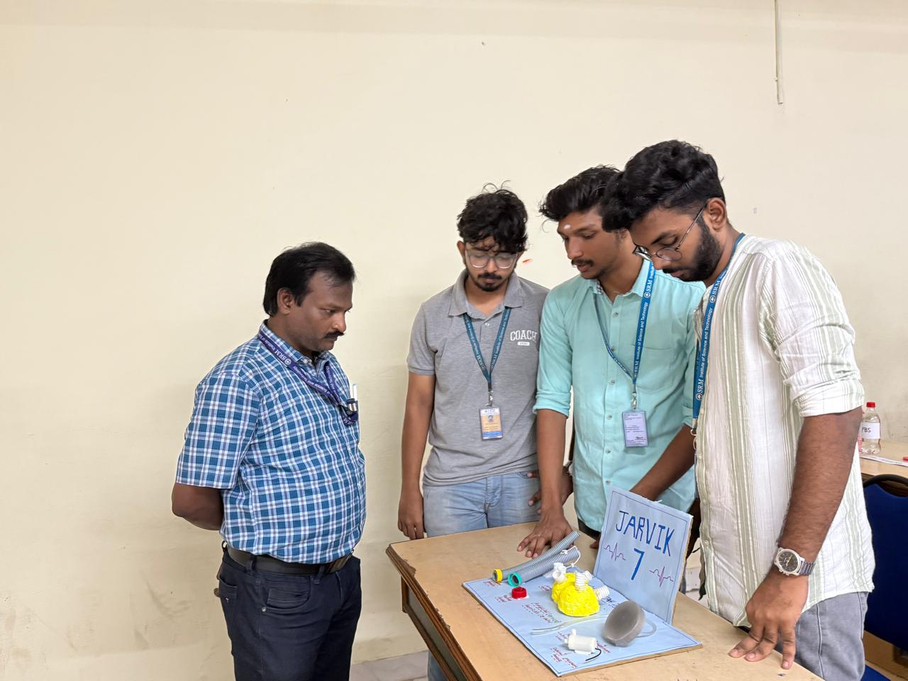
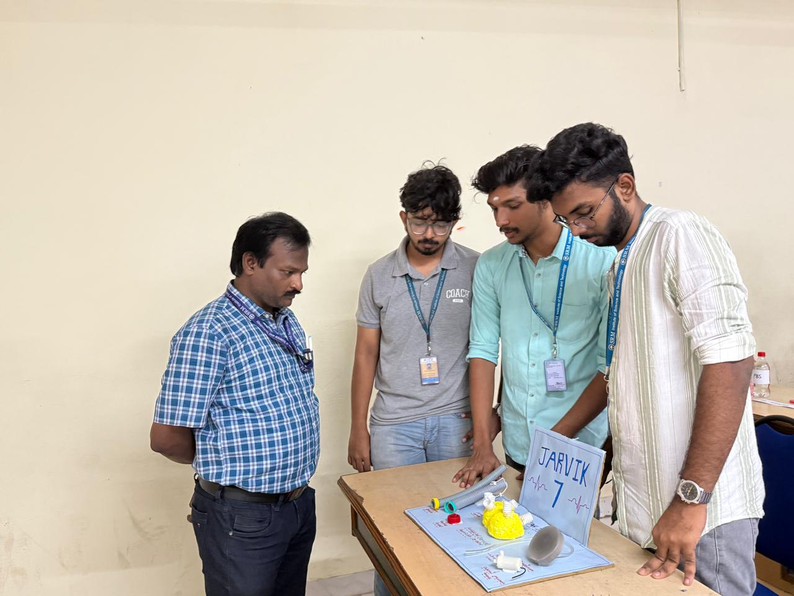

🖼️ Model Image
Below is an image of the static sliced model of the Jarvik-7 artificial heart:

Exploring Biomedical Engineering Through Hands-On Creativity
This project showcases a hand-crafted, static model of the Jarvik-7 artificial heart. Inspired by a personal interest in biomedical engineering, the model was created to gain practical understanding of artificial organs—particularly the design and structure of artificial hearts.
The Jarvik-7 was the first permanent total artificial heart implanted in a human. It played a significant role in the history of biomedical innovation. My model focuses on representing its physical structure rather than its functionality.
This was not created for a competition or exhibition. The model was built purely out of personal curiosity and a desire to gain hands-on experience in the field of biomedical devices.
Below is an image of the static sliced model of the Jarvik-7 artificial heart:

Through this project, I gained a clearer understanding of how artificial hearts are structured, how components fit together, and how engineering intersects with human biology. It was a rewarding experience that deepened my interest in biomaterials and prosthetic device design.